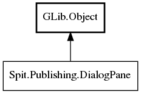

DialogPane
Object Hierarchy:

Description:
public interface DialogPane :
Object
Encapsulates a pane that can be installed in the on-screen publishing dialog box to communicate status to and to get information from the
user.
Namespace: Spit.Publishing
Package: shotwell-plugin-dev
Content:
Enums:
-
GeometryOptions - Describes how the on-
screen publishing dialog box should look and behave when an associated pane is installed in the on-screen publishing dialog box.
Methods:
-
public abstract
Widget get_widget ()
Returns the Gtk.Widget that is this pane's on-screen representation.
-
public abstract GeometryOptions get_preferred_geometry ()
Returns a GeometryOptions
bitfield describing how the on-screen publishing dialog box should look and behave when this pane is installed.
-
public abstract void on_pane_installed ()
Invoked automatically by Shotwell when this pane has been installed into the on-screen publishing dialog
box and become visible to the user.
-
public abstract void on_pane_uninstalled ()
Invoked automatically by Shotwell when this pane has been removed from the on-screen publishing dialog
box and is no longer visible to the user.